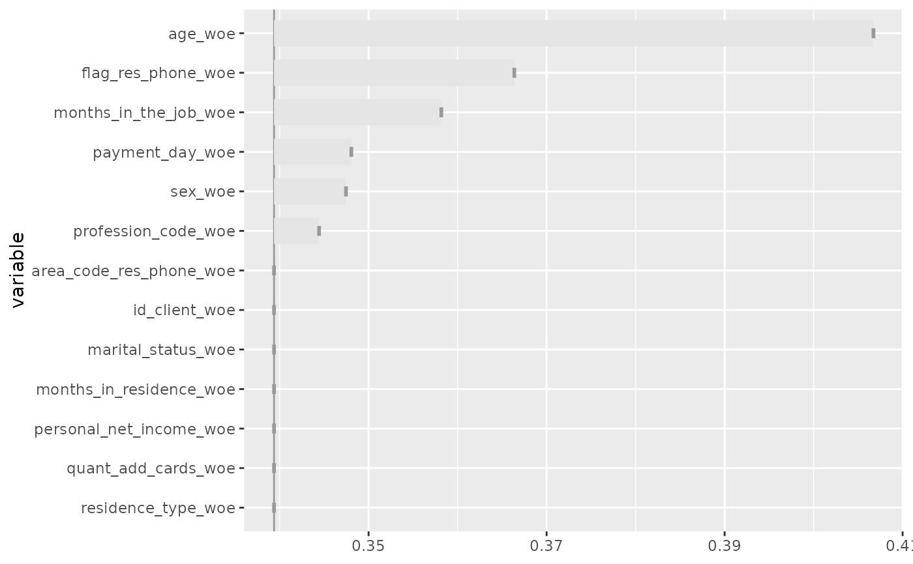

Plot models
Usage
gg_model_roc(model, newdata = NULL, ...)
gg_model_ecdf(model, newdata = NULL, ...)
gg_model_dist(model, newdata = NULL, alpha = 0.5, ...)
gg_model_coef(model, level = 0.95, show_intercept = FALSE, ...)
gg_model_corr(model, upper = FALSE, ...)
gg_model_vif(model, colors = c("#3aaf85", "#1b6ca8", "#cd201f"), ...)
gg_model_importance(model, ...)
gg_model_importance2(model, bins, ...)
gg_model_partials(model, newdata = NULL, verbose = TRUE, ...)
gg_model_calibration(
model,
newdata = NULL,
alpha = 0.01,
color = "black",
size = 1,
alpha_smooth = 0.5,
color_smooth = "#3366FF",
size_smooth = 1,
...
)Arguments
- model
model
- newdata
newdata
- ...
Additional arguments for celavi::variable_importance.
- alpha
alpha
- level
= 0.95
- show_intercept
show_intercept
- upper
upper
- colors
colors
- bins
bins
- verbose
verbose
- color
color
- size
size
- alpha_smooth
alpha_smooth
- color_smooth
color_smooth
- size_smooth
size_smooth
Examples
data("credit_woe")
m <- glm(bad ~ ., family = binomial, data = head(credit_woe, 10000))
m <- featsel_stepforward(m, scale = 5, trace = 0)
dnew <- tail(credit_woe, 10000)
gg_model_roc(m)
gg_model_roc(m, newdata = dnew, size = 2)
gg_model_ecdf(m)
gg_model_ecdf(m, newdata = dnew, size = 2)
gg_model_dist(m)
gg_model_dist(m, newdata = dnew, alpha = 0.4, color = "transparent")
gg_model_calibration(m)
#> `geom_smooth()` using method = 'gam' and formula = 'y ~ s(x, bs = "cs")'
gg_model_calibration(m, newdata = dnew, alpha = 0.05, size = 2)
#> `geom_smooth()` using method = 'gam' and formula = 'y ~ s(x, bs = "cs")'
gg_model_coef(m)
gg_model_corr(m)
#> Correlation computed with
#> • Method: 'pearson'
#> • Missing treated using: 'pairwise.complete.obs'
gg_model_vif(m)
gg_model_importance(m)
#> ℹ Using all variables in data.
#> ℹ Using 1 - AUCROC as loss function.
#> ℹ Using `base::identity` as sampler.

gg_model_partials(m)
#> ℹ Fitting and evaluating model with 1 variables: age_woe
#> ℹ Creating woe binning ...
#> ℹ Fitting and evaluating model with 2 variables: age_woe, flag_res_phone_woe
#> ℹ Creating woe binning ...
#> ℹ Fitting and evaluating model with 3 variables: age_woe, flag_res_phone_woe, m...
#> ℹ Creating woe binning ...
#> ℹ Fitting and evaluating model with 4 variables: age_woe, flag_res_phone_woe, m...
#> ℹ Creating woe binning ...
#> ℹ Fitting and evaluating model with 5 variables: age_woe, flag_res_phone_woe, m...
#> ℹ Creating woe binning ...
#> ℹ Fitting and evaluating model with 6 variables: age_woe, flag_res_phone_woe, m...
#> ℹ Creating woe binning ...
gg_model_coef(m) + ggplot2::coord_flip() + ggplot2::scale_y_discrete(limits = rev)
gg_model_vif(m) + ggplot2::coord_flip() + ggplot2::scale_x_discrete(limits = rev)
gg_model_corr(m, upper = TRUE)
#> Correlation computed with
#> • Method: 'pearson'
#> • Missing treated using: 'pairwise.complete.obs'
gg_model_corr(m, upper = TRUE) +
ggplot2::coord_flip() +
ggplot2::scale_y_discrete(limits = rev) +
ggplot2::scale_x_discrete(limits = rev)
#> Correlation computed with
#> • Method: 'pearson'
#> • Missing treated using: 'pairwise.complete.obs'
data("credit_woe")
m <- glm(bad ~ ., family = binomial, data = head(credit_woe, 10000))
m <- featsel_stepforward(m, scale = 5, trace = 0)
bins <- scorecard::woebin(credit, "bad", no_cores = 1)
#> ℹ Creating woe binning ...
#> Warning: There were 3 constant columns removed from input dataset,
#> flag_other_card, flag_mobile_phone, flag_contact_phone
#> ✔ Binning on 49694 rows and 14 columns in 00:00:05
gg_model_importance2(m, bins)
gg_model_importance2(m, bins, fill = "gray60", width = 0.5)